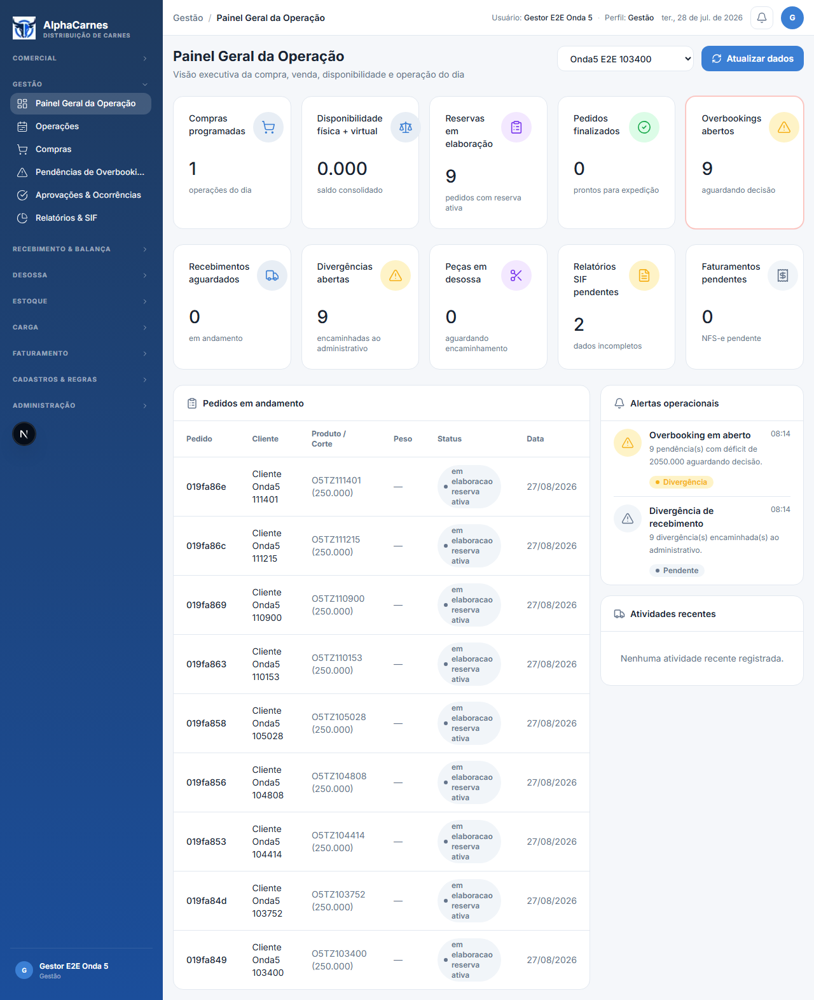
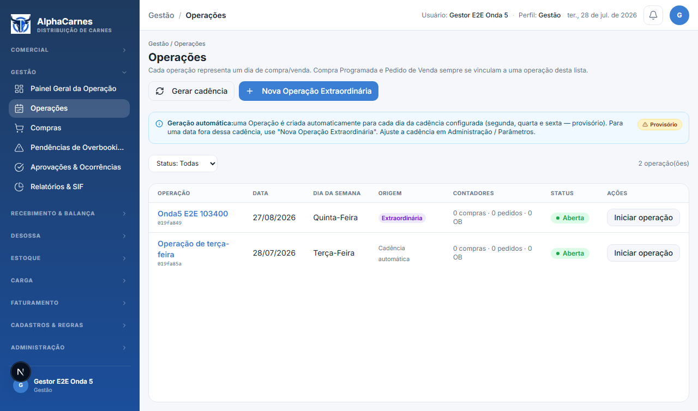
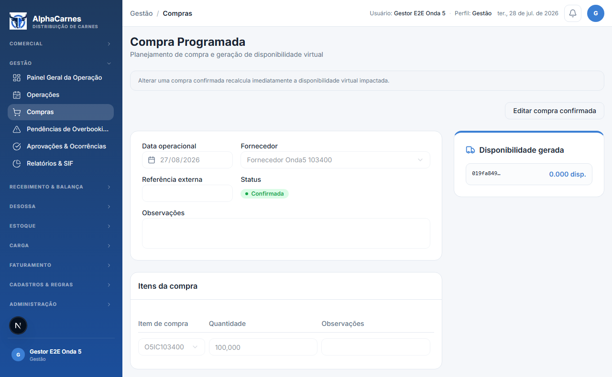
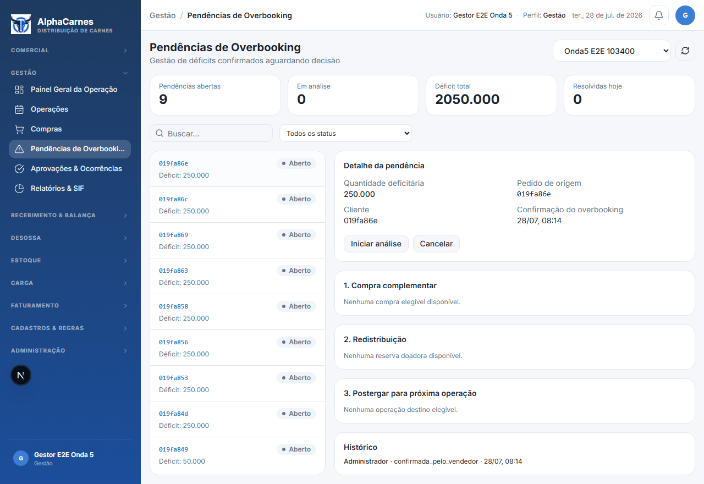
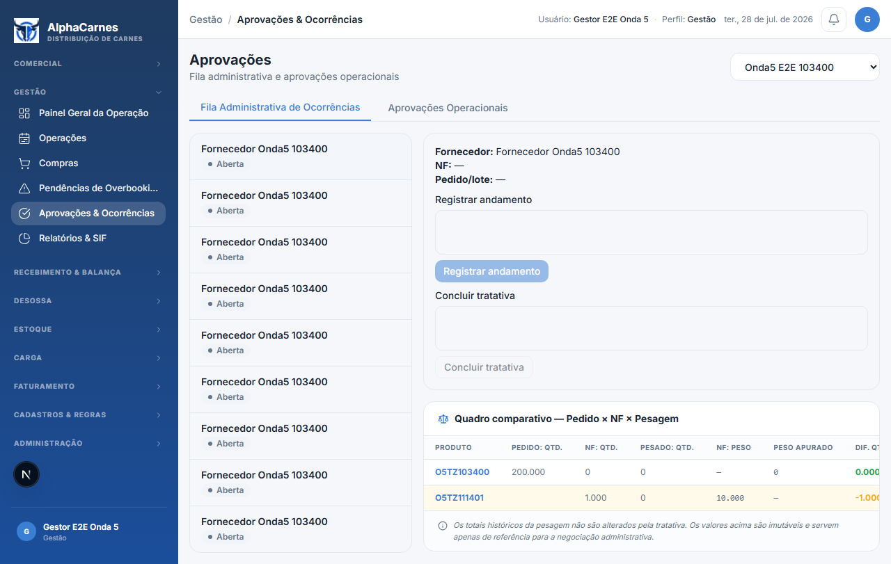
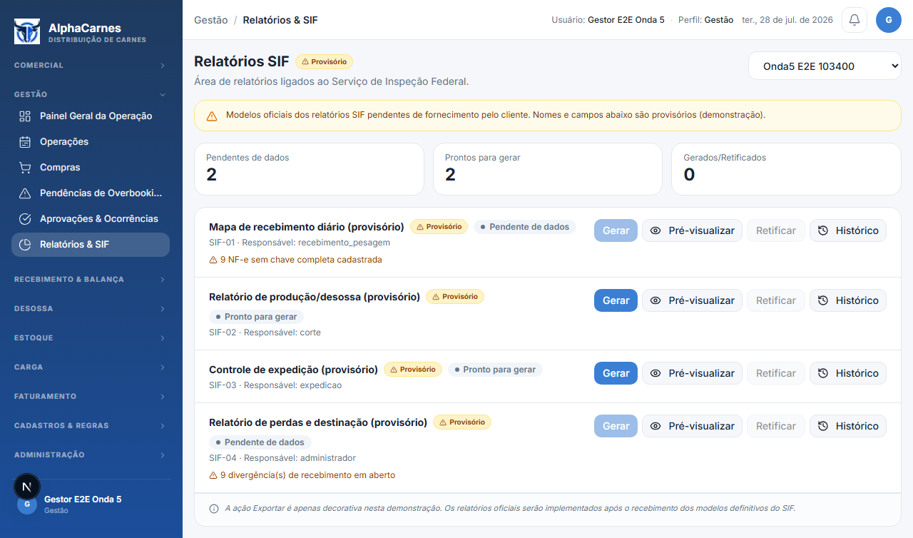
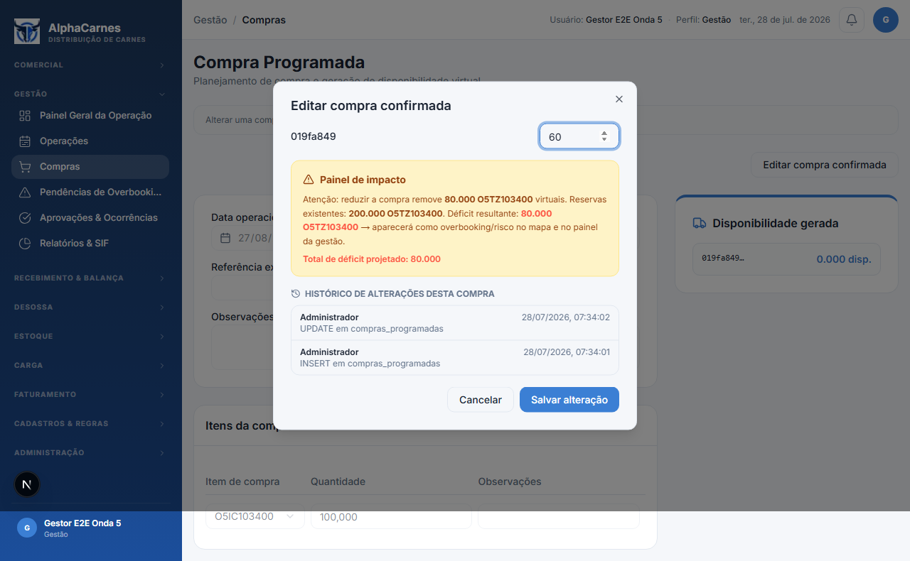
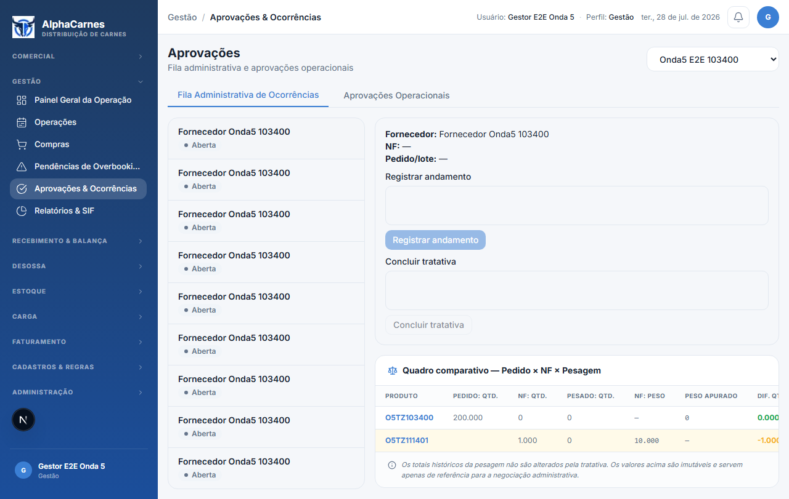
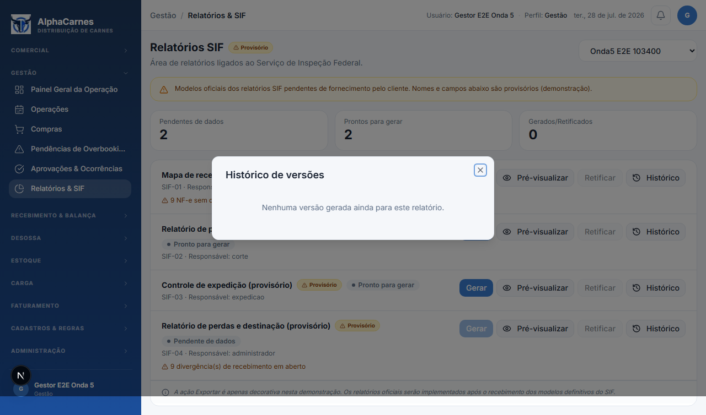

Rastreabilidade dos Dados
Run ID
20260728111401
Operação
019fa849-e00f-7a51-ba76-e964e104c69e
Data operacional
2026-08-27
Compra programada
019fa849-e123-7952-83a2-a00cf6902388
Fornecedor
019fa86e-7f5f-765a-bdb8-3333558abfa0
Cliente
019fa86e-811f-7906-9104-a48f36840e21
Item compra
019fa86e-7ff7-76e2-a9a1-3f91f4253555
Item comercial
019fa86e-808b-7660-bbb7-d50dc08e8330
Ocorrência
019fa86e-8b97-76fd-8d4e-f6235ad914b3
Cobertura
- 6 rotas de Gestão navegadas via menu como perfil gestor.
- Painel de impacto, decisão de overbooking, comparativo imutável e versões SIF quando dados disponíveis.
Observações
01
Painel Geral da Operação
http://localhost:3100/gestao/dashboard?operacaoId=019fa849-e00f-7a51-ba76-e964e104c69e

02
Operações
http://localhost:3100/gestao/operacoes

03
Compras
http://localhost:3100/gestao/compras

04
Pendências de Overbooking
http://localhost:3100/gestao/overbooking?operacaoId=019fa849-e00f-7a51-ba76-e964e104c69e

05
Aprovações & Ocorrências
http://localhost:3100/gestao/aprovacoes?operacaoId=019fa849-e00f-7a51-ba76-e964e104c69e

06
Relatórios & SIF
http://localhost:3100/gestao/relatorios?operacaoId=019fa849-e00f-7a51-ba76-e964e104c69e

07
Painel de impacto — déficit projetado
http://localhost:3100/gestao/compras

08
Overbooking — três caminhos de decisão
http://localhost:3100/gestao/overbooking?operacaoId=019fa849-e00f-7a51-ba76-e964e104c69e
09
Comparativo Pedido × NF × Pesagem
http://localhost:3100/gestao/aprovacoes?operacaoId=019fa849-e00f-7a51-ba76-e964e104c69e

10
Relatórios SIF — histórico de versões
http://localhost:3100/gestao/relatorios?operacaoId=019fa849-e00f-7a51-ba76-e964e104c69e
